廢話生活紀錄:
過年前一個禮拜我的mac電腦突然爆了，行程整個被打亂，現在也因為疫情所以電腦零件還沒到，還好我有一台Windows可以充當來用，想著不能因為這件事當作藉口什麼都不做，所以趕快來新增文章，不然很多事情都要忘光光啦。
前言
把最近最新在研究的記憶最猶新的部分趕快來記。最近碰到Google Cloud Compute Engine，跟AWS EC2差不多的服務，這次要完成的是在機器裡面建立好資料庫，讓外部IP可以進來紀錄/讀取資料。
要做的事:
- 在Google cloud開一台vm機器，作業系統我用Ubuntu18.04
- google cloud防火牆打開port
- vm裡面安裝mariaDB
- mariaDB創建新使用者，設定ip/password/username
- 測試MariaDB有無正常運作
- 在db config設定可供外部ip連線
- 在vm機器裡打開防火牆port 3306
完成連線步驟。
依照上面所說的，開始設定
1. 開vm機器
運算 > Compute Engine > VM執行個體
點建立執行個體
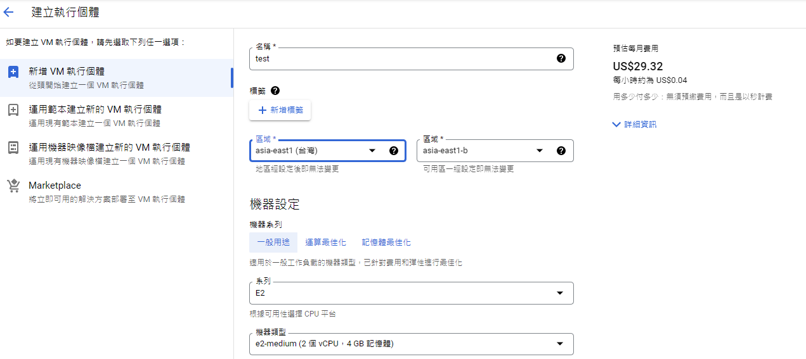往下移有個
開機磁碟選Ubuntu
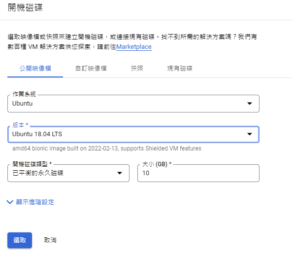再往下點選有個倒三角
網路、磁碟、安全性、管理、單一用戶群選
網路- 設定
網路標記: 為了等下和防火牆連結用的!
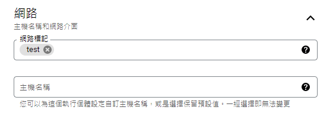 - 設定
網路介面的外部IP建立IP位址 : 不要用臨時的，讓外部IP保持一致。
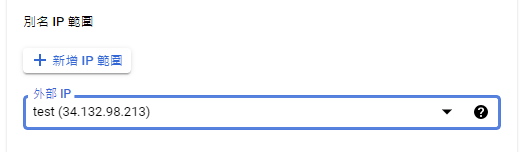
- 設定
可以建立了。
2. google cloud的防火牆設定
- 網路 > 虛擬私有雲網路 > 防火牆
- 點建立防火牆規則
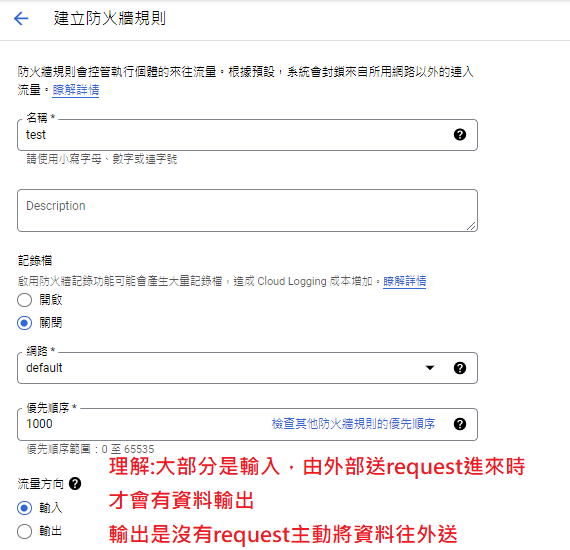
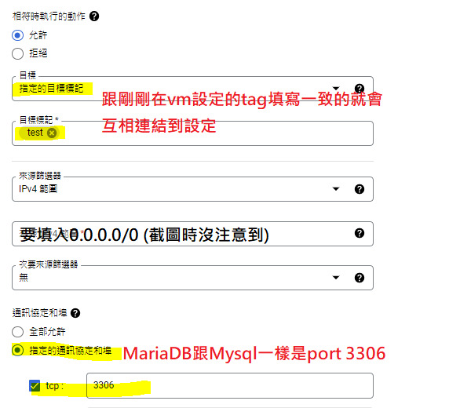
可以建立了。
3. vm裡面安裝mariaDB
1 | sudo apt update |
sudo mysql_secure_installation指令下了之後會需要回答一些問題
Enter current password for root (enter for none): 沒有current password直接enter就可
Set root password? [Y/n]
N不用設密碼再來的其他問題可以
全Y或直接enter用預設設定即可
4. mariaDB創建新使用者並給予最大管理權限
用管理員身分進入mariaDB server
1
2
3以下兩者指令一樣
sudo mysql -u root
sudo mariadb進入DB之後創建使用者+給權限
1
2
3
4
5
6
7
8
9
10
11# 說明: GRANT ALL ON *.* TO '設定使用者名稱'@'讓哪個IP可以進來資料庫' IDENTIFIED BY '設定密碼' WITH GRANT OPTION;
> IP設%表示讓所有來源的IP都可以連進來。
> 只供本機內部使用的話是設定localhost。
MariaDB[(none)]> GRANT ALL ON *.* TO 'admin'@'%' IDENTIFIED BY 'admin' WITH GRANT OPTION;
# 說明: 確保使用者被儲存且可以使用
MariaDB[(none)]> FLUSH PRIVILEGES;
# 說明: 可以退出MariaDB了
MariaDB[(none)]> exit
5. 測試MariaDB運行
1 | sudo systemctl status mariadb #成功會顯示active <附圖1> |
附圖1
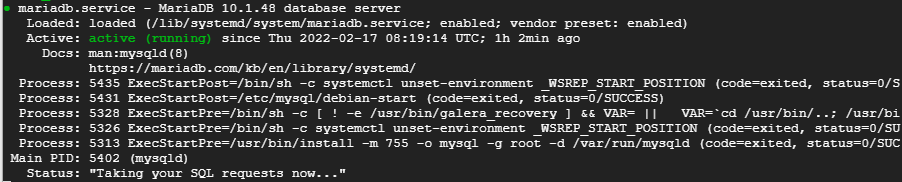
附圖2
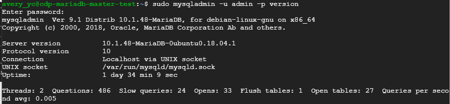
- 你創建的使用者也擁有root的權限，現在試著用輸入帳密的方式進入mysql server
$ mysql -u admin -padmin#-p直接輸入密碼 (-p跟密碼中間不要空格)
MariaDB[(none)]>use mysql ;
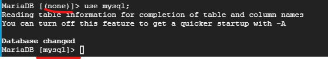
MariaDB[(mysql))]>SELECT User, Host, plugin FROM mysql.user;#顯示使用者的資訊
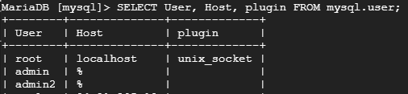
6. db config設定可供外部ip連線
在vm裡面
config路徑: /etc/mysql/mariadb.conf.d 裡面的50-server.cnf檔案
conf檔案不一定是這個喔，網路上找都是 my.cnf，所以還是自己一個一個打開來找是哪個檔最快
進去config檔案裡面會有bind-address = 127.0.0.1 改成
bind-address = 0.0.0.0或#註解掉
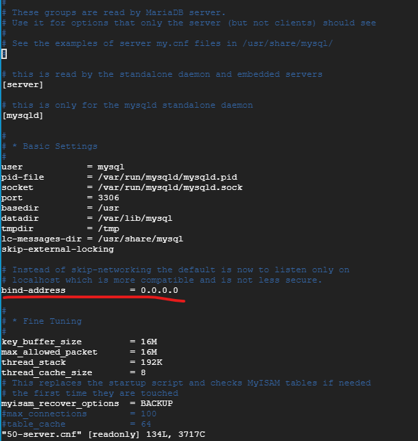設定完config 要 restart 資料庫 ⇒
$ sudo service mysql restart非常重要，因為我遇到這個坑
7. 在vm機器裡打開防火牆port 3306
1 | sudo ufw allow 3306 allow port 3306 |
遠端連線資料庫成功(工具or程式碼)
1 | const mariadb = require('mariadb') |
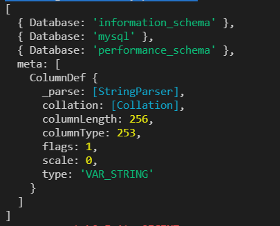
心得:
仍然有疑問的地方: 在vm裡面開啟了防火牆&允許的port，但在gooogle cloud為什麼還要再設定一次開啟的port? 是因為google 提供了(靜態ip)外部ip，所以要給這個外部ip也設定開啟的port嗎?
google cloud的機器解鎖了!
資料參考:
[教學][Ubuntu 架站] 如何在 Google Cloud Platform 架設 Ubuntu 伺服器
在 Ubuntu 18.04上安裝 MariaDB
How To Install MariaDB on Ubuntu 20.04
Ubuntu 18 MySQL開啟遠端登入
Ubuntu 18.04 關閉及開啟防火牆